Ctrl+V (서식 유지됨)제목
본문 (이 영역 전체가 복사됩니다)
📷 여기에 이미지 넣기 — 썸네일 — thumb-yeungnam.png (대표 이미지로 지정)
영남대 창의인재전형 전공자유선택학부에서 먼저 챙길 것은 면접일이 수능 이틀 뒤라는 점입니다. 1단계 선발자 발표는 10월 7일(수) 17:00에 이미 났고, 수능은 11월 19일(목), 면접은 11월 21일(토) 09:00 경산캠퍼스입니다. 2단계는 수능 최저학력기준을 충족한 1단계 선발자 중에서 1단계 성적 70%와 면접 30%를 합산해 뽑습니다. 면접은 다수의 면접위원이 인성, 창의성, 전공적합성 등을 종합적으로 평가합니다. 전공자유선택학부는 2027학년도에 창의인재전형에 새로 들어온 모집단위라 지난해 면접 기록이 없습니다. 영남대학교 2027학년도 수시 신입생 모집요강을 바탕으로 전형 방법과 일정, 면접 방식, 예상 질문 7개, 수능 전후 준비 순서를 정리하고, 11월 28일에 면접을 보는 의예과 전형들은 한 구역으로 묶었습니다. 전공자유선택학부(인문·자연) 1단계 합격자와 영남대 의예과 지역인재·지역의사선발전형 지원자가 읽으시면 됩니다.
1. 창의인재전형, 2027학년도에는 어떻게 보나
창의인재전형은 학생부교과 전형으로 의예과 8명, 전공자유선택학부(인문) 15명, 전공자유선택학부(자연) 18명을 뽑습니다. 지원자격은 고등학교 졸업(예정)자 또는 법령에 따라 같은 수준 이상의 학력을 인정받은 사람입니다(27쪽). 2026학년도 [학생부교과]의학창의인재가 창의인재로 이름을 바꾸면서 전공자유선택학부 인문·자연이 새로 들어왔습니다(11쪽).
📷 여기에 이미지 넣기 — 캡처 1 — 영남대학교 2027학년도 수시 신입생 모집요강 11쪽: yeungnam-2027-change.png
전공자유선택학부는 국어, 수학, 영어, 사회/과학탐구(2개 과목), 한국사를 반드시 응시해야 합니다. 수능 최저학력기준은 국어·수학·영어·탐구 중 상위 2개 영역 등급 합 8 이내이고 한국사는 응시만 하면 됩니다. 탐구는 2개 과목에 응시하고 상위 1개 과목 등급을 반영합니다. 자연 지원자가 수학 미적분·기하를 선택하면 취득 등급을 1등급 올려 반영합니다(예: 3등급 → 2등급)(27쪽).
📷 여기에 이미지 넣기 — 캡처 2 — 영남대학교 2027학년도 수시 신입생 모집요강 27쪽: yeungnam-2027-units.png
1단계는 학교생활기록부성적 100%(560점)로 전공자유선택학부 모집인원의 500%(5배수)를 뽑았습니다. 2단계는 1단계 선발자 중 수능 최저를 충족한 사람을 대상으로 1단계 성적 560점(70%)과 면접고사 240점(30%), 총 800점으로 뽑습니다(27쪽). 이 글에서 모집인원에 5를 곱해 계산하면 1단계 합격 규모는 인문 75명, 자연 90명 안팎입니다. 동점자는 교과성적, 영어교과(진로선택과목 제외) 석차등급, 반영 과목(진로선택과목 제외) 이수 학점수, 영어교과 이수 학점수 순으로 가리고, 그래도 같으면 모두 선발합니다(28쪽).
📷 여기에 이미지 넣기 — 캡처 3 — 영남대학교 2027학년도 수시 신입생 모집요강 27쪽: yeungnam-2027-method.png
2. 언제 보나: 수능 이틀 뒤 11월 21일(토) 09:00 면접
전공자유선택학부 일정은 날짜순으로 이렇습니다(수능을 뺀 날짜는 15·28쪽).
- 10월 7일(수) 17:00: 1단계 선발자 발표(발표 끝남)
- 11월 17일(화) 17:00 이후: 입학안내 홈페이지에서 고사실·대기실 확인
- 11월 19일(목): 수능
- 11월 21일(토) 09:00: 면접, 영남대학교 경산캠퍼스(경북 경산시 대학로 280)
- 12월 18일(금) 15:00: 합격자 발표
- 12월 21일(월) ~ 23일(수): 최초합격자 온라인 문서등록
고사 시작시간은 상황에 따라 바뀔 수 있습니다(28쪽). 합격자 발표는 입학안내 홈페이지에만 게시하고 개별 통지는 하지 않습니다(19쪽). 창의인재전형 의예과 면접은 10월 17일(토)에 치렀습니다(15쪽).
📷 여기에 이미지 넣기 — 캡처 4 — 영남대학교 2027학년도 수시 신입생 모집요강 15쪽: yeungnam-2027-schedule.png
3. 면접은 어떻게 보나
면접 대상은 1단계 선발자이고, 평가방법은 "다수의 면접위원이 인성, 창의성, 전공적합성 등을 종합적으로 평가"입니다(28쪽). 면접 시간, 면접위원 수, 평가 항목별 배점은 모집요강에 적혀 있지 않습니다. 면접고사 결시자·중도포기자, 부정행위자, 면접고사성적 0점인 사람은 불합격입니다(28쪽). 면접 대상자는 입학안내 홈페이지에서 고사일시·장소·유의사항을 확인하고 지정된 시간에 대기실(고사실)에 들어가야 합니다(18쪽). 복장 규정과 블라인드 면접 안내는 모집요강에 없습니다.
📷 여기에 이미지 넣기 — 캡처 5 — 영남대학교 2027학년도 수시 신입생 모집요강 28쪽: yeungnam-2027-interview.png
참고로 영남대는 입학안내 홈페이지 선행학습 영향평가 게시판에 「2026학년도 선행학습 영향평가 자체평가보고서」를 올려 두었습니다. 여기 실린 2026학년도 의학창의인재전형(의예과) 면접은 두 영역이었습니다. 전공적합성 영역은 연구 결과 자료를 주고 결과를 설명한 뒤 근거를 들어 선택하게 했고, 인성 영역은 한 가지 쟁점을 놓고 이유, 장단점과 내 생각, 내가 취할 자세를 차례로 물었습니다(보고서 37·40쪽). 보고서는 이 면접이 교과 지식을 묻는 문제 풀이식이 아니라고 적었습니다(보고서 1쪽). 의예과 기록이고 전공자유선택학부도 같은 형태일지는 모집요강에 없으니, 자료를 읽고 말하는 연습은 대비 삼아 함께 해 두세요.
4. 평가방법에서 나올 예상 질문 7개와 답변법
영남대는 2027학년도 모집요강에 면접 질문 예시를 공개하지 않았습니다. 아래 7개는 28쪽의 평가방법(인성, 창의성, 전공적합성)과 8쪽의 전공자유선택학부 안내, 위 보고서의 문항 형태를 참고해 이 글에서 만든 예상 질문입니다. 예시 답변은 인문·자연을 바꿔 가며 쓴 가상의 예시이니 본인 경험으로 바꾸세요.
▶ 질문 1. 전공자유선택학부에 지원한 이유는 무엇인가요? (전공적합성)
왜 묻나: 전공을 정하지 않고 들어오는 학부라, 왜 1년의 탐색이 필요한지 내 경험으로 설명해야 합니다.
답변 구조: 지원 이유 한 문장 → 관심이 생긴 학교생활 장면 → 그때 알게 된 것 → 1년 동안 할 일.
답변 예시 (인문):
"전공자유선택학부에 지원한 이유는 관심 있는 두 분야를 직접 배워 본 뒤 전공을 고르고 싶기 때문입니다. 2학년 때 지역 전통시장 방문객이 줄어든 이유를 조사하면서, 상인 인터뷰는 사회문화 시간에, 방문객 통계는 확률과 통계 시간에 배운 방법으로 정리했습니다. 같은 문제도 사람의 이야기와 숫자를 함께 봐야 원인이 보인다는 것을 배웠고, 경영과 사회학 중 어느 쪽이 제게 맞는지 아직 확인하고 싶습니다. 1년 동안 두 분야의 기초 과목을 듣고 학사지도교수님과 상담해, 근거를 갖고 전공을 정하겠습니다."
주의: "아직 하고 싶은 게 없어서"로 끝내지 마세요. 무엇과 무엇 사이에서 고민하는지를 말하면 됩니다.
▶ 질문 2. 1년 동안 어떤 방법으로 전공을 탐색할 계획인가요? (전공적합성)
왜 묻나: 전공자유선택학부는 1년간의 전공탐색 기간을 거쳐 전공을 고르는 학부입니다. 희망 학과계열 교수를 배정하는 학사지도교수제, 재학생과의 전공탐색 멘토링 프로그램 등이 있습니다(8쪽).
답변 구조: 탐색할 분야 두 개 → 1학기에 할 것 → 2학기에 할 것 → 무엇을 기준으로 고를지.
답변 예시 (자연):
"저는 화학 계열과 컴퓨터 계열 사이에서 고민하고 있습니다. 1학기에는 두 분야의 기초 과목을 함께 듣고, 전공탐색 멘토링 프로그램에서 두 학과 선배님께 실제 수업과 실험이 어떤지 묻겠습니다. 2학기에는 학사지도교수님과 상담하면서 제가 더 오래 붙잡고 있던 과제가 어느 쪽이었는지 돌아보겠습니다. 오래 고민해도 지치지 않는 쪽을 기준으로 전공을 고르겠습니다."
주의: 프로그램 이름을 나열하기보다 내가 무엇을 확인하려는지를 말하세요.
▶ 질문 3. 이 표를 보고 무엇을 알 수 있는지 설명하고, 본인의 판단을 말해 보세요. (창의성·전공적합성)
왜 묻나: 2026학년도 의학창의인재전형 전공적합성 영역이 자료를 해석하고 근거를 들어 판단하는 형태였습니다(보고서 37쪽). 전공자유선택학부에서도 같은 형태가 나온다는 근거는 없지만, 자료를 읽고 말하는 순서를 익혀 두면 어떤 질문에도 쓸 수 있습니다.
답변 구조: 표에서 읽은 사실 하나 → 그 이유로 생각하는 것 → 표만으로는 알 수 없는 것 → 내 판단.
답변 예시 (자연, 반별 아침 결식률과 1교시 졸음 설문을 나란히 놓은 표가 주어졌다고 가정):
"표를 보면 아침을 거르는 학생이 많은 반일수록 1교시에 졸린다고 답한 학생도 많습니다. 아침을 먹지 않으면 오전에 쓸 에너지가 부족하기 때문일 수 있습니다. 다만 이 표만으로는 아침을 걸러서 졸린 것인지, 늦게 자서 아침도 거르고 졸린 것인지 알 수 없습니다. 그래서 저는 수면 시간을 함께 조사한 뒤에 결론을 내리겠습니다."
주의: 표에 없는 숫자를 만들어 말하지 마세요. 알 수 없는 것을 말하는 것도 해석입니다.
📷 여기에 이미지 넣기 — 이미지 1 — 제미나이 생성: 늦가을 창가 라운지에서 지구본·현미경·라벨 없는 막대그래프·인문 서적·짙은 파랑 노트 옆에서 답하는 남학생(실사) / "제미나이 프롬프트 1" · gem-yeungnam-1.png
(AI로 만든 이미지로, 실제 캠퍼스와 다를 수 있습니다)
▶ 질문 4. 수업 시간 동안 학교가 휴대전화를 걷는 규칙의 장점과 문제점은 무엇이고, 본인은 어떻게 생각하나요? 대안이 있다면 말해 보세요. (인성·창의성)
왜 묻나: 2026학년도 의학창의인재전형 인성 영역은 한 쟁점에 대해 여러 질문을 차례로 묻는 형태였습니다(보고서 40쪽). 그 형태를 따라 이 글에서 만든 질문입니다.
답변 구조: 장점 → 문제점 → 내 의견 → 대안. 질문이 여러 개면 순서대로 번호를 붙여 답합니다.
답변 예시 (인문):
"먼저 장점은 수업에 집중하기 쉽다는 것입니다. 문제점은 급한 연락을 받을 수 없고, 학생이 스스로 조절하는 연습을 할 기회가 줄어든다는 것입니다. 저는 걷는 규칙에 찬성하지만 학년마다 다르게 하는 것이 좋다고 생각합니다. 대안으로 1학년은 걷고, 2학년부터는 반에서 스스로 정한 규칙으로 바꾸고 지키지 못하면 다시 걷는 방법을 제안합니다."
주의: 찬반 중 한쪽을 고른 뒤, 반대쪽 걱정도 받아들인 대안을 붙이세요.
▶ 질문 5. 익숙한 방식을 바꿔서 문제를 해결해 본 경험이 있나요? (창의성)
왜 묻나: 평가방법의 '창의성'과 연결한 질문입니다. 거창한 발명보다 방식을 바꾼 이유와 결과를 말하면 됩니다.
답변 구조: 문제 상황 → 원래 방식과 한계 → 내가 바꾼 방식 → 결과와 배운 점.
답변 예시 (자연):
"과학실 실험 도구 반납이 늘 늦어져 다음 반 수업이 밀리는 문제가 있었습니다. 원래는 반장이 마지막에 한꺼번에 확인했는데 시간이 오래 걸렸습니다. 저는 도구 상자마다 사진을 붙여, 모둠이 사진과 똑같이 정리해 두면 바로 확인되게 바꿨습니다. 반납 시간이 줄었고, 사람에게 맡기던 확인을 구조로 바꾸면 쉬워진다는 것을 배웠습니다."
주의: 결과를 숫자로 부풀리지 말고, 실제로 달라진 장면을 말하세요.
▶ 질문 6. 모둠 활동에서 맡은 일을 하지 않는 친구가 있었다면 어떻게 했나요? (인성)
왜 묻나: 평가방법의 '인성'과 연결한 예상 질문입니다.
답변 구조: 상황 → 먼저 확인한 것 → 내가 한 행동 → 결과와 배운 점.
답변 예시 (인문):
"한국사 모둠 발표 때 자료 조사를 맡은 친구가 마감 전날까지 자료를 올리지 않았습니다. 화를 내기 전에 따로 이유를 물었더니, 주제가 너무 넓어 어디서 시작할지 몰랐다고 했습니다. 그래서 주제를 세 가지로 나눠 그중 하나를 같이 찾아 주었고, 친구는 나머지 두 가지를 맡아 끝냈습니다. 일을 안 하는 것처럼 보여도 이유를 먼저 들어야 한다는 것을 배웠습니다."
주의: 친구를 탓하는 말로 시작하지 마세요. 내가 한 행동에 시간을 쓰세요.
▶ 질문 7. 원하는 전공에 배정되려면 1학년을 어떻게 보내야 한다고 생각하나요? (전공적합성·인성)
왜 묻나: 1학년 1·2학기를 이수하고 30학점 이상을 취득하며 1학년 성적(평점평균) 4.5점 기준 3.0 이상을 받은 학생은 전원 원하는 전공에 배정됩니다(8쪽). 이 조건을 알고 있는지와 계획을 함께 말할 수 있는 질문입니다.
답변 구조: 조건을 알고 있다는 한 문장 → 공부 계획 → 탐색 계획 → 다짐.
답변 예시 (자연):
"원하는 전공에 가려면 1학년 1·2학기에 30학점 이상, 평점 3.0 이상이 필요하다고 알고 있습니다. 그래서 첫 학기에는 기초 과목의 수업 복습을 매주 하겠습니다. 동시에 관심 있는 두 학과의 수업을 하나씩 들어 보며 맞는지 확인하겠습니다. 성적과 탐색을 함께 챙겨서 고르고 싶은 전공을 고를 수 있는 상태를 만들겠습니다."
주의: 숫자 조건을 틀리게 말하지 않도록 8쪽 내용을 한 번 더 확인하세요.
📷 여기에 이미지 넣기 — 캡처 6 — 영남대학교 2027학년도 수시 신입생 모집요강 8쪽: yeungnam-2027-major.png
5. 답변은 이 4단계로 만드세요
어떤 질문이든 결론 → 경험 → 배운 점 → 연결 순서로 40~60초 안에 말하세요. 아래 도식은 질문 1을 4단계로 쪼갠 것입니다.
📷 여기에 이미지 넣기 — 도식 — structure-yeungnam.png
6. 의예과는 11월 28일(토), 같은 날 두 전형
학생부종합 지역인재전형(의예과 10명)과 학생부종합 지역의사선발전형(진료권, 의예과 9명; 학생부교과 광역권은 면접 없음, 12쪽)은 1단계 서류평가 100%(560점)로 10배수를 뽑고, 2단계 서류 70%(560점) + 면접 30%(240점)입니다. 1단계 발표는 11월 13일(금) 17:00, 고사실·대기실 확인은 11월 24일(화) 17:00 이후입니다. 면접 장소는 둘 다 대구캠퍼스(영남대학교 의과대학)입니다(15·31~34쪽).
- 지역인재(의예과): 11월 28일(토) 09:00. 다수의 면접위원이 학교생활기록부 및 제시문을 바탕으로 잠재역량, 학업역량, 공동체역량을 종합 평가합니다(32쪽). 수능 최저는 국어·수학·영어·과학탐구 4개 영역 등급 합 6 이내로, 2026학년도 3합 4에서 바뀌었습니다(11·31쪽).
- 지역의사선발(진료권): 2027학년도 신설(11쪽), 11월 28일(토) 15:00. 다수의 면접위원이 제시문을 바탕으로 지역의료인으로서 갖추어야 할 공동체역량(사회역량, 개인역량)을 종합 평가합니다(34쪽). 수능 최저는 포항·경주·구미권이 수학 포함 상위 3개 영역 합 5 이내, 안동·영주·상주권이 상위 3개 영역 합 5 이내입니다(33쪽). 졸업 후 10년 동안 지원한 진료권에서 복무할 의무가 있습니다(12쪽).
📷 여기에 이미지 넣기 — 캡처 7 — 영남대학교 2027학년도 수시 신입생 모집요강 32쪽: yeungnam-2027-med-local.png
📷 여기에 이미지 넣기 — 캡처 8 — 영남대학교 2027학년도 수시 신입생 모집요강 34쪽: yeungnam-2027-med-doctor.png
2026학년도 지역인재전형(의약) 의예과 면접은 상황을 제시하고 대응을 묻는 제시문 문항과 학생부 기반 서류 확인 문항으로 구성되었습니다(보고서 41·42쪽). 두 전형 모두 면접고사 결시자와 면접고사성적 0점인 사람은 불합격입니다(32·34쪽).
7. 10월 31일(토)부터 면접 당일까지 준비 순서
10월 31일(토) ~ 11월 16일(월): 수능 공부가 먼저이니 주말에 조금씩 합니다. 질문 1·2·7의 답을 초안으로 만들고, 신문 기사의 표나 그래프 하나를 골라 "읽은 사실, 이유, 알 수 없는 것, 내 판단" 순서로 말해 봅니다.
11월 17일(화) 17:00 이후: 입학안내 홈페이지에서 고사실·대기실을 확인합니다(28쪽).
11월 18일(수): 수능 준비물만 챙깁니다.
11월 19일(목): 수능.
11월 20일(금): 질문 1~7을 한 번씩 소리 내어 녹음하고 60초를 넘는 답을 줄입니다. 경산캠퍼스까지 가는 길과 걸리는 시간을 확인합니다. 새 답변은 만들지 않습니다.
11월 21일(토) 09:00, 면접: 결시하면 불합격이니 일찍 출발합니다(28쪽).
12월 18일(금) 15:00: 합격자 발표. 합격했다면 12월 21일(월) ~ 23일(수) 온라인 문서등록을 놓치지 마세요. 기간 안에 하지 않으면 등록 포기로 간주합니다(15쪽).
8. 영남대 창의인재 면접 자주 묻는 것들
Q. 수능 최저가 있나요?
A. 있습니다. 전공자유선택학부는 상위 2개 영역 등급 합 8 이내이고, 2단계는 최저를 충족한 1단계 선발자만 대상입니다(27쪽).
Q. 원하는 전공에 못 가면 어떻게 되나요?
A. 1학년 1·2학기 이수, 30학점 이상, 평점평균 3.0 이상이면 전원 원하는 전공에 배정됩니다. 2023학년도 입학생 중 92.7%, 2024학년도 89.3%, 2025학년도 86.2%가 희망 전공으로 배정됐습니다. 8쪽에 적힌 단과대학 안에서만 배정되고(의예과·약학부·사범대학 등은 없음), 그중 군사학과·스마트모빌리티학과·산업경영학과·체육학부는 빠집니다(8쪽).
Q. 제시문을 읽고 푸는 문제가 나오나요?
A. 2027학년도 모집요강의 창의인재전형 면접 안내에는 제시문 안내가 없습니다(28쪽). 2026학년도 의학창의인재 면접에는 자료와 쟁점을 주는 문항이 있었고, 보고서는 문제 풀이식이 아니라고 적었습니다(보고서 1·37·40쪽).
Q. 면접 시간과 면접위원 수는요?
A. 모집요강에는 "다수의 면접위원"이라고만 되어 있고 시간은 적혀 있지 않습니다(28쪽).
Q. 면접 복장은 어떻게 하나요?
A. 모집요강에는 면접 복장 규정이 없습니다.
9. 면접 전날 체크리스트
□ 전공자유선택학부에 지원한 이유를 고민 중인 두 분야와 함께 60초 안에 말할 수 있다
□ 1년 동안의 탐색 계획을 학기별로 말할 수 있다
□ 표나 그래프를 "읽은 사실, 이유, 알 수 없는 것, 판단" 순서로 말해 봤다
□ 쟁점 질문에 장점, 문제점, 내 의견, 대안 순서로 답할 수 있다
□ 원하는 전공 배정 조건(30학점 이상, 평점 3.0 이상)을 정확히 말할 수 있다
□ 입학안내 홈페이지에서 고사실과 대기실을 확인했다
□ 경산캠퍼스까지 가는 길과 걸리는 시간을 확인했다
10. 같은 시기에 면접 보는 대학
영남대 창의인재전형과 같은 11월 21일에 면접을 보는 대학입니다.
▷ 경북대 학생부종합 지역인재전형 면접 총정리 (11월 21일)
▷ 세종대 세종인재(면접형) 면접 총정리 (11월 21일·22일)
11. 함께 보면 좋은 글
▷ AI·데이터사이언스학과 면접 질문 6가지와 답변 예시 총정리
영남대 창의인재전형 면접은 수능 이틀 뒤, 인성·창의성·전공적합성을 바탕으로 1년의 전공 탐색 계획과 내 생각을 말하는 자리입니다.
※ 이 글의 내용은 영남대학교 2027학년도 수시 신입생 모집요강과 영남대 입학안내 홈페이지의 「2026학년도 선행학습 영향평가 자체평가보고서」에서 인용했습니다. 괄호 안 쪽수는 모집요강에 인쇄된 쪽수이고, "보고서"라고 적은 쪽수는 보고서에 인쇄된 쪽수입니다. 예상 질문은 모집요강의 평가방법과 보고서의 문항 형태를 바탕으로 정리한 것이며 대학이 공개한 2027학년도 질문이 아닙니다. 고사실과 시작시간은 영남대 입학안내 홈페이지 공지를 꼭 확인하세요.
영남대를 포함한 76개 대학의 2027학년도 면접 정보와 71개 학과별 면접 질문·답변 예시, 대학이 공개한 실제 면접 기출을 무료로 정리한 사이트입니다. 회원가입 없이 바로 볼 수 있고, 질문을 무작위로 뽑아 60초 타이머로 연습하는 모의 면접도 있습니다.
태그 (#은 에디터가 자동으로 붙이므로 그대로 붙여 넣어도 됩니다)
넣을 이미지 목록 (docs/promo/img 폴더)
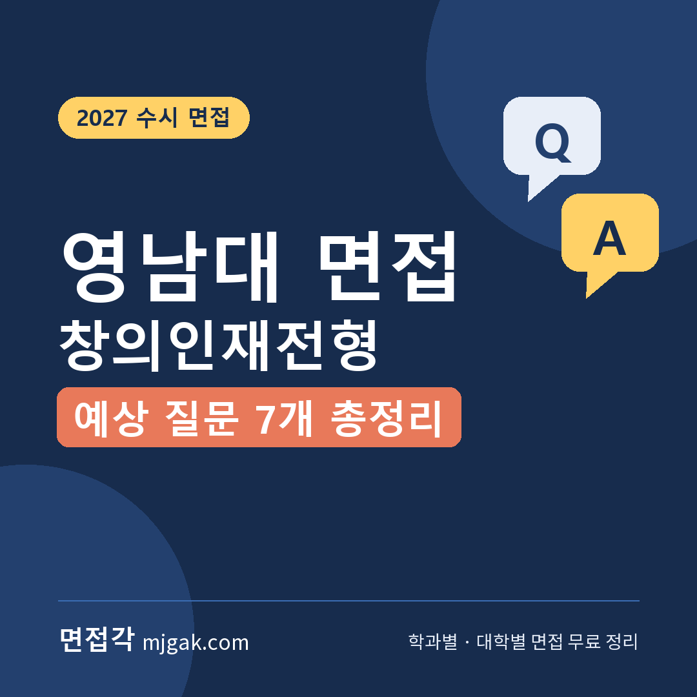
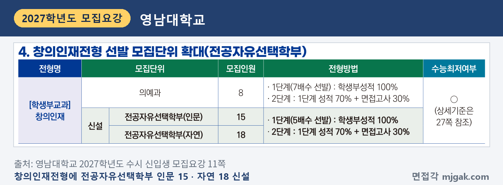
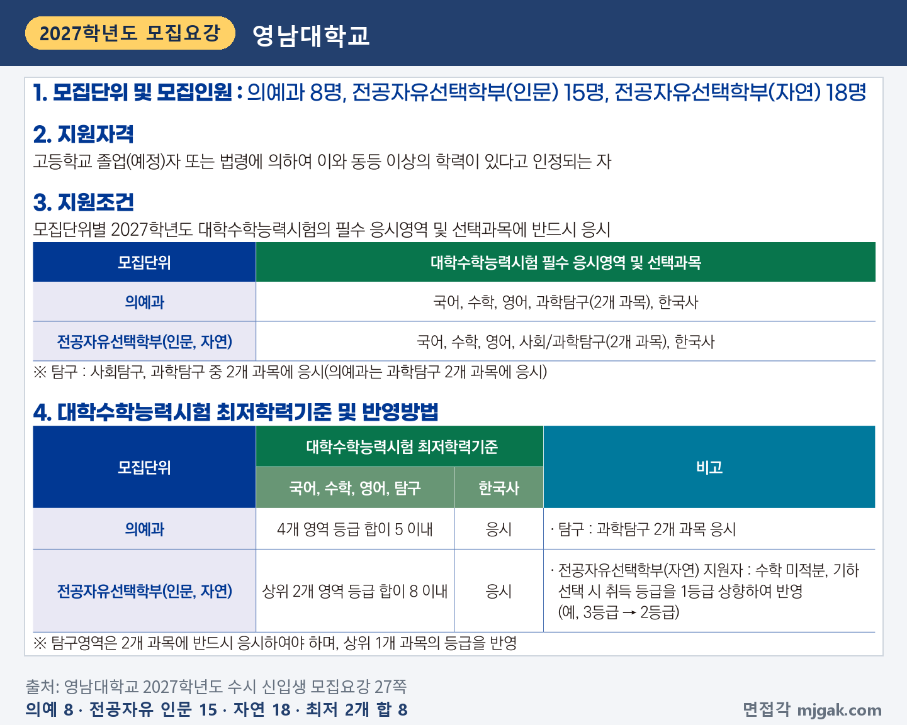
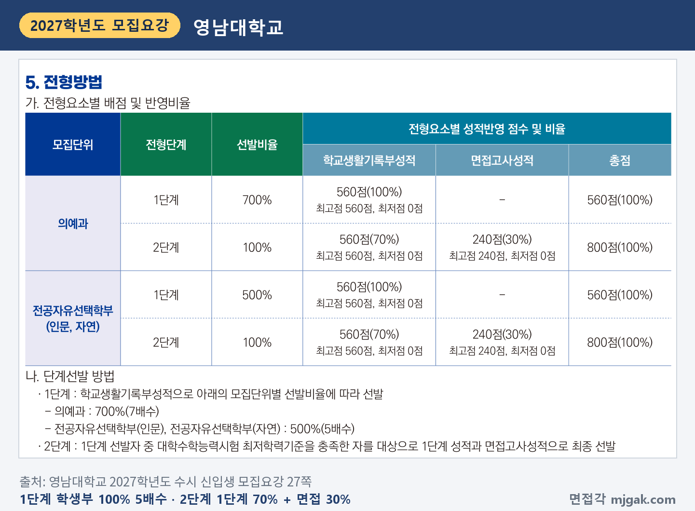
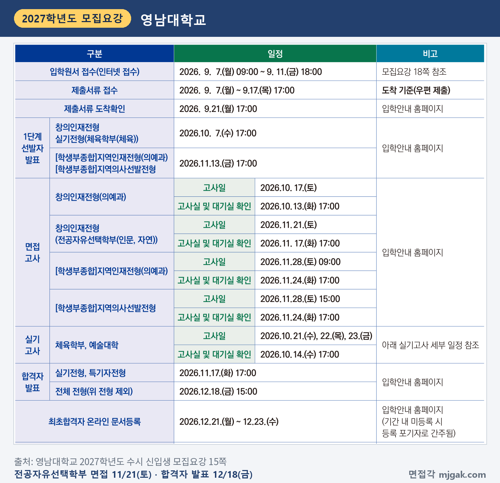
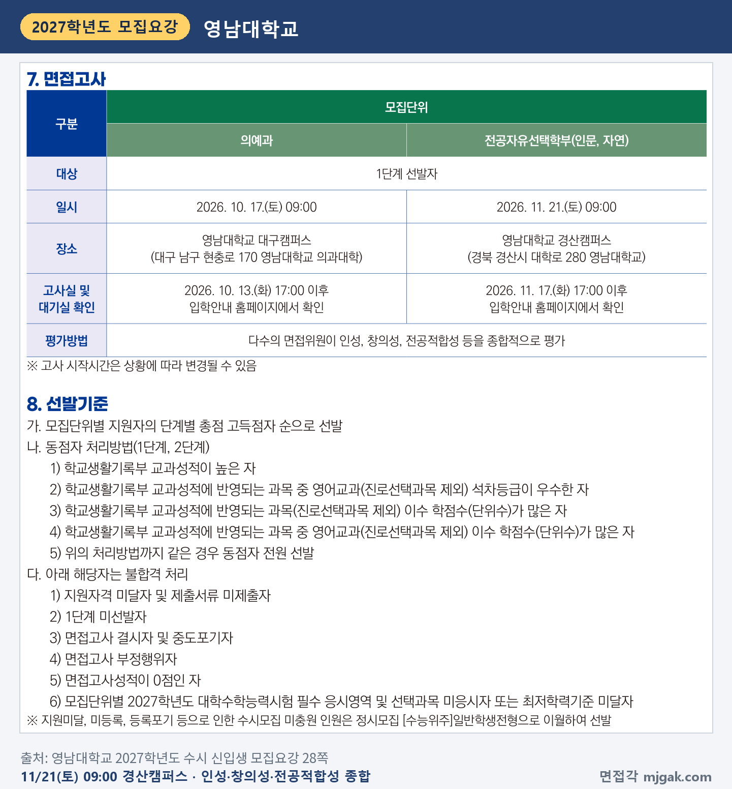
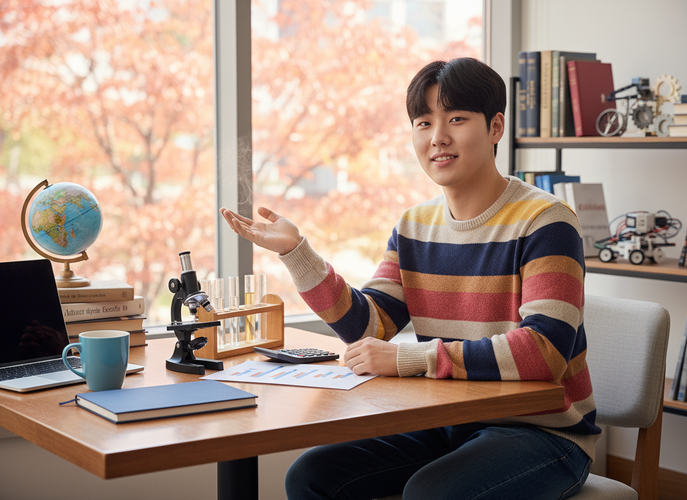
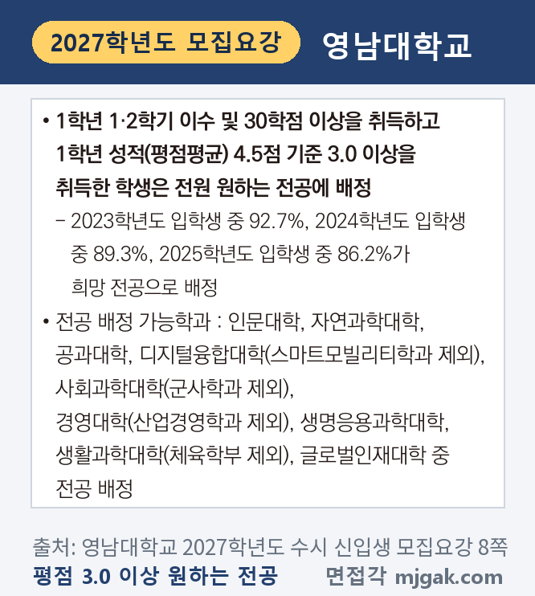
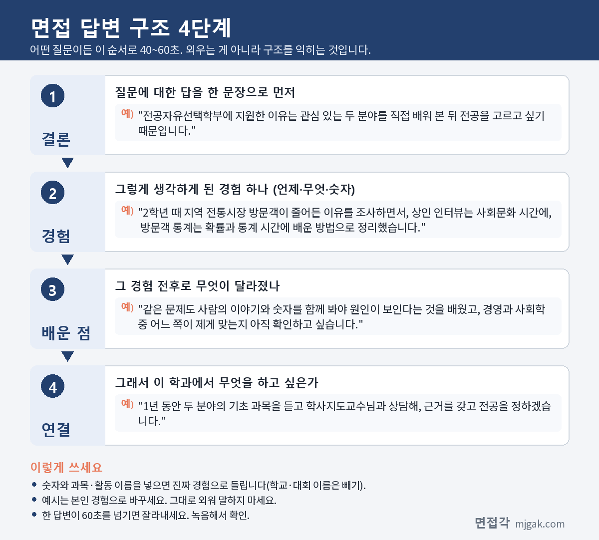
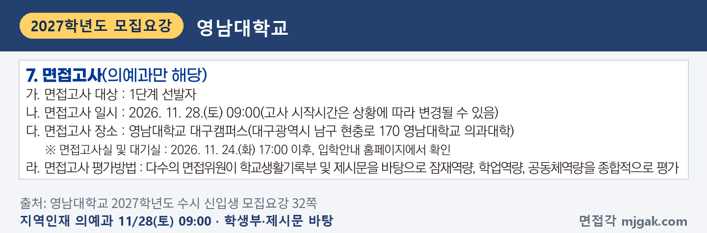
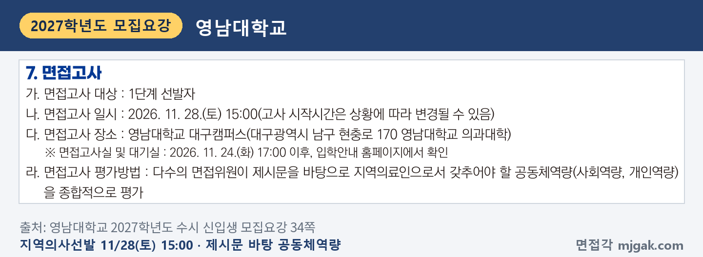
제미나이 프롬프트 1 — 늦가을 창가 라운지에서 지구본·현미경·라벨 없는 막대그래프·인문 서적·짙은 파랑 노트 옆에서 답하는 남학생(실사) (4:3) — 제미나이에 그대로 붙여 넣어 이미지를 만드세요